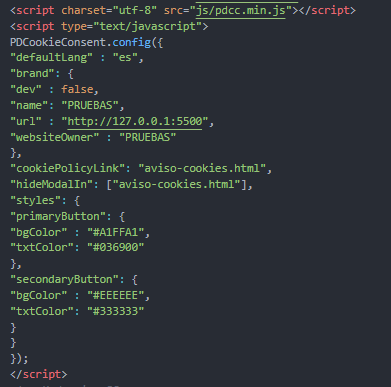
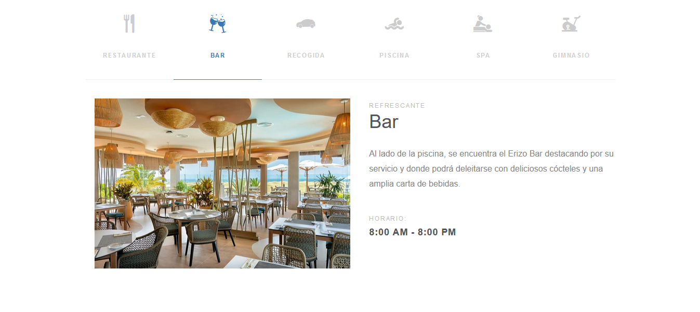
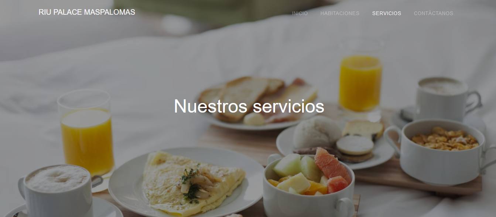
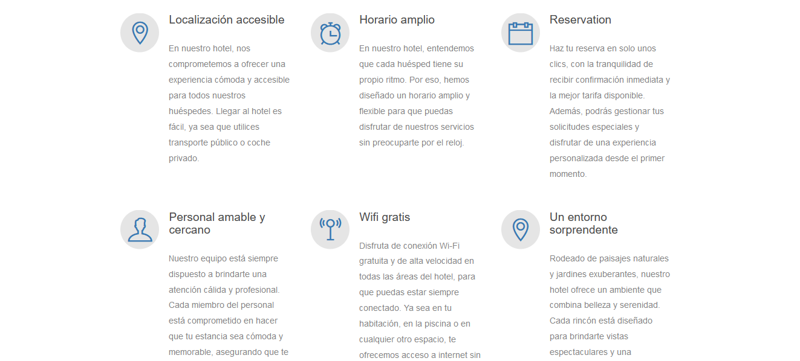

Presentacion
¡Buenas! Para la primera actividad de FMCC hemos realizado nuestra propia página web del hotel Riu Palace Maspalomas.
Codigo
Para comenzar con la explicación de las principales implementaciones de nuestro codigo vamos a explicar primero las metatags que hemos introducido
Hemos introducido tanto una metatags para los motores de búsqueda actuales con una descripción, palabras clave y autores, además, de unas metatags especiales para las dos principales redes sociales, facebook y twitter
Ademas, hemos añadido la funcion de cookies para poder obtener asi mas informacion del usuario además de poder usar herramientas extras con sus propias cookies, en este caso YouTube
Asi se verian dentro de la web
Esta sería una página creada por nosotros con informacion sobre las cookies de caracter general

Página Web
Finalmente ahora podemos apreciar nuestra página web, tenemos tres imagenes para nuestra portada
Además podemos apreciar como si no hemos aceptado las cookies no nos aparecera el siguiente vídeo de Youtube mostrando el hotel por dentro
Aquí veriamos mas partes de la pagina de Inicio
En segundo lugar tenemos otra sección de la página web que nos explica los servicios mas en detalle
 Además de una página para visualizar las habitaciones o la tuya en concreto